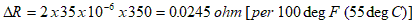
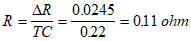

How to Compensate Zero Shift with Temperature
Strain Gage Based Transducer reference
Assume, to begin with, that four strain gages, which should always be of the same type and from the same manufacturing lot, are bonded to a spring element and wired to form a full-bridge circuit. When excitation is applied, the output of the bridge will not ordinarily be zero, but should be small enough to fall well within the working range of the indicating instruments typically used with transducers. Then, if the gaged spring element is warmed or cooled, and stabilized at some other temperature, the output will normally change. This characteristic behavior of an uncompensated, unloaded transducer can be readily verified by experiment. Even in cases where the spring element is part of a large structure such as a bridge or a commercial aircraft, it is usually possible to perform such a test by taking measurements at different times in the day when the temperature changes naturally.
After carefully measuring the change in output with temperature, the nominal value of the compensating resistor can be calculated directly for any selected high-TC resistor alloy. Assume, for instance, that the bridge circuit is composed of four 350-ohm gages with a gage factor of 2.0, and that a temperature rise of 100 deg F (55 deg C) causes a change in bridge output equivalent to 35 microstrain in a single active gage (17.5 �V/V from the full bridge). The corresponding resistance change can be expressed as:
where:
 = resistance change, ohms
= resistance change, ohms
 = gage factor of gages
= gage factor of gages
 = equivalent output strain
= equivalent output strain
 = bridge resistance
= bridge resistance
Substituting the above quantities,

Copper, with a TCR of about 22% per 100 deg F (55 deg C) is a suitable material for the compensating resistor in this case. When the required compensating resistance change and the TCR of the resistor are both expressed in terms of the same temperature range, the copper resistance can be calculated directly from:

Thus, a copper resistor of 0.11 ohm in series with the gage in one of the arms should exactly compensate for the temperature-induced zero shift of the bridge circuit. The resistance of the copper required is usually very small, and this can make the task of selecting a resistor and soldering it in place quite difficult. In the present example, for instance, if AWG-40 (0.08-mm) copper wire were used for the resistor, the length to produce 0.11 ohm would be only about 1.25 in, or 32 mm.
Selecting, instead, a copper, double ladder resistor (E pattern) for installation in one corner of the bridge circuit offers several advantages.

The initial uncut resistance of the pattern is very low; and the arrangement indicated in the figure assures that an adjustable resistor will be available in whichever bridge arm requires it. Furthermore, if over-compensation accidentally occurs, it is easy to correct the error by simply increasing the conductive path length of the copper in the adjacent arm.
Once the spring element is gaged and the bridge wired with the copper double ladder in place, the initial bridge output can be measured. Then the unit can be placed in an oven or environmental chamber to determine the output at a second temperature. The direction of the change in output (with respect to the temperature change) will indicate which of the two adjacent arms needs added temperature sensitivity. Through experience, and trial and error, the ladder in that arm can be increased in resistance until the temperature-induced zero shift is within acceptable limits.